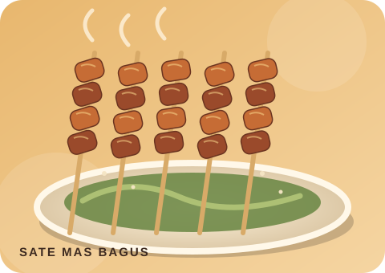
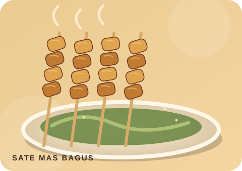
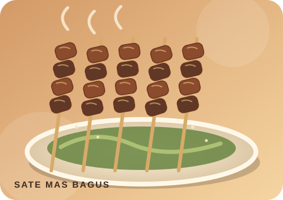

01 / GURIH MANIS
Sate Sapi
Potongan daging sapi dengan balutan bumbu kecap.
SATE • ASAP • CERITA
Kenalan dengan pilihan sate dari Sate Mas Bagus. Dipanggang saat dipesan, disajikan dengan bumbu pilihan.

PILIHAN FAVORIT

Potongan daging sapi dengan balutan bumbu kecap.

Rasa akrab dengan bumbu kacang yang kaya.

Menu alternatif dengan racikan rempah.
Bukan cuma soal sate. Ini soal duduk sebentar, makan selagi hangat, dan menikmati cerita.
— SATE MAS BAGUSSUDAH LAPAR?